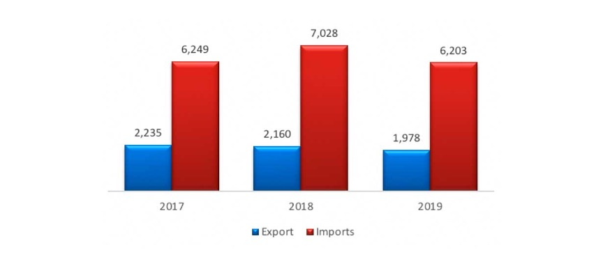
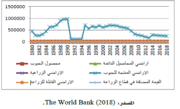

دور الصادرات الزراعية فى التنمية الاقتصادية
نشر في: 4 ابريل 2023
المقدمة
تعد الزراعة جزءا لا يتجزأ من التنمية الاقتصادية واستقرار أي دولة، فهي توفر مصدرًا رئيسيًا للغذاء والدخل والتشغيل لمعظم سكان هذه الدول وتساهم في رفع الدخل القومي وتحقيق الأمن الغذائي وتوفير الخامات للصناعات وتحسين ميزان المدفوعات. كما أنها تسهم في تحقيق التوازنات الإقليمية والفئوية والاجتماعية من خلال توزيع الموارد والثروات بشكل عادل، ومن خلال استخدام الموارد المتاحة، مثل الأراضي والعمالة، يمكن للإنتاج الزراعي أن يعزز النمو الاقتصادي السريع والتنمية المستدامة، إلا أن هذه الأهمية لم تترجم إلى استثمارات كافية في قطاع الزراعة، فقد شهد هذا القطاع انخفاضا في حصته من الموارد المالية والبشرية والبحثية مقارنة بغيره من القطاعات، وفي ظل التحديات التي تواجه التنمية الزراعية، مثل التغير المناخي وانخفاض الموارد المائية والأرضية وزيادة الطلب على الغذاء، فإن هناك حاجة ماسة إلى إعادة تأهيل قطاع الزراعة.
تعريف التنمية الاقتصادية واهميتها
التنمية الاقتصادية مفهوم بالغ الأهمية في مجال الاقتصاد، وهو يشير إلى عملية تحسين الرفاه الاقتصادي لدولة أو منطقة أو مجتمع من خلال تدابير مختلفة، غالبا ما تقاس التنمية الاقتصادية بالتغيرات في المؤشرات الاقتصادية، مثل نصيب الفرد من الناتج المحلي الإجمالي، ومعدلات العمالة، ومعدلات الفقر، ونوعية الحياة. في هذا الجزء سوف نتعرف على ماهية التنمية الاقتصادية واهمتها.
تعريف التنمية الاقتصادية:
التنمية الاقتصادية مفهوم متعدد الأبعاد يشمل مجموعة واسعة من العوامل، بما في ذلك النمو الاقتصادي والحد من الفقر وعدم المساواة في الدخل والتنمية البشرية والاستدامة البيئية. وغالبا ما يعرف بأنه النمو المستدام والشامل للاقتصاد الذي يؤدي إلى زيادة الإنتاجية، ورفع مستويات المعيشة، وتحسين نوعية الحياة لمواطنيه. ويمكن تحقيق التنمية الاقتصادية من خلال وسائل مختلفة، مثل زيادة الاستثمار في رأس المال المادي والبشري، وتعزيز ريادة الأعمال والابتكار، وتحسين البنية التحتية، وتعزيز التجارة، وخلق بيئة تمكينية للشركات كي تزدهر.
أهمية التنمية الاقتصادية:
تلعب التنمية الاقتصادية دورا حيويا في نمو وازدهار الدول والمناطق والمجتمعات المحلية، فيما يلي بعض الأسباب الرئيسية التي تجعل التنمية الاقتصادية مهمة:
1.زيادة الإنتاجية والنمو الاقتصادي:
ترتبط التنمية الاقتصادية ارتباطا وثيقا بالإنتاجية والنمو الاقتصادي، ومن خلال الاستثمار في رأس المال المادي والبشري، وتحسين البنية التحتية، وتعزيز ريادة الأعمال والابتكار، يمكن للدول والمناطق زيادة إنتاجيتها وتنمية اقتصاداتها، ويؤدي ذلك إلى مستويات أعلى من الدخل، وتحسين مستويات المعيشة، وزيادة الفرص الاقتصادية للمواطنين.
2.الحد من الفقر:
كما أن التنمية الاقتصادية بالغة الأهمية للحد من الفقر، ومع نمو الاقتصادات وزيادة إنتاجيتها، فإنها تخلق المزيد من الوظائف والفرص للمواطنين، مما يقلل من مستويات الفقر. وهذا أمر مهم بشكل خاص في البلدان النامية، حيث غالبا ما يكون الفقر منتشرا وشديدا. ومن خلال تعزيز التنمية الاقتصادية، يمكن للحكومات إخراج الناس من الفقر وتحسين نوعية حياتهم.
3.تحسين مستويات المعيشة:
ترتبط التنمية الاقتصادية ارتباطا وثيقا بتحسين مستويات المعيشة، ومع ارتفاع الدخل، يمكن للناس تحمل تكاليف السكن والرعاية الصحية والتعليم وغيرها من السلع والخدمات الأساسية، ويؤدي ذلك إلى تحسين النتائج الصحية وارتفاع مستويات التعليم وزيادة التنقل الاجتماعي، وفي نهاية المطاف، تعد التنمية الاقتصادية ضرورية لتحسين نوعية حياة المواطنين.
4.تعزيز التجارة والتنافسية:
كما تعزز التنمية الاقتصادية من تجارة الدولة وقدرتها التنافسية، ومن خلال تعزيز ريادة الأعمال والابتكار، وتحسين البنية التحتية، والاستثمار في رأس المال البشري، يمكن للدول والمناطق أن تخلق بيئة تمكينية للشركات كي تزدهر، وهذا بدوره يؤدي إلى زيادة التجارة والاستثمار الأجنبي والنمو الاقتصادي.
5.الاستدامة البيئية:
وأخيرا، فإن التنمية الاقتصادية ضرورية لتحقيق الاستدامة البيئية. ومن خلال تعزيز ممارسات التنمية المستدامة، يمكن للدول والمناطق حماية الموارد الطبيعية والحد من التلوث وتعزيز الطاقة النظيفة، وهذا لا يفيد البيئة فحسب، بل يعزز أيضا النمو الاقتصادي والازدهار على المدى الطويل.
مؤشرات أداء القطاع الزراعي وأثره على مختلف جوانب التنمية:
تعد الزراعة قطاعا مهما من قطاعات الاقتصاد في العديد من البلدان، ولا سيما في البلدان النامية، يوفر الغذاء والمواد الخام للصناعة، ويخلق فرص العمل، ويولد الدخل للمزارعين والمجتمع الأوسع نطاقا، وبالتالي فإن أداء القطاع الزراعي هو مؤشر مهم للتنمية الاقتصادية. سيتحدث هذا الجزء عن مؤشرات الأداء الزراعي وأثرها على مختلف جوانب التنمية.
مؤشرات الأداء الزراعي:
هناك عدة مؤشرات يمكن استخدامها لقياس أداء القطاع الزراعي، ويشمل ذلك:
1.الإنتاجية الزراعية: تقيس كمية المخرجات لكل وحدة من المدخلات في القطاع الزراعي، ويتم احتسابه بقسمة إجمالي الإنتاج الزراعي على إجمالي المدخلات المستخدمة.
2.الدخل الزراعي: يقيس الدخل الذي يحققه المزارعون من بيع المنتجات الزراعية، يتم حسابه بضرب سعر المنتج بالكمية المباعة.
3.التوظيف الزراعي: يقيس عدد المشتغلين في القطاع الزراعي، ويشمل ذلك العاملين بدوام كامل أو جزئي.
4.الصادرات الزراعية: تقيس قيمة المنتجات الزراعية المصدرة من الدولة، وهو مؤشر مهم على القدرة التنافسية للدولة في السوق العالمية.
5.الواردات الزراعية: تقيس قيمة المنتجات الزراعية المستوردة إلى الدولة، وهو مؤشر مهم على اعتماد الدولة على الأغذية المستوردة.
6.الاستثمار الزراعي: يقيس حجم الأموال المستثمرة في القطاع الزراعي، وتشمل استثمارات في البنية التحتية، والبحث والتطوير والتكنولوجيا.
أثر مؤشرات الأداء الزراعي:
يمكن أن يكون لأداء القطاع الزراعي تأثير كبير على مختلف جوانب التنمية، وفيما يلي مناقشة لبعض الآثار الرئيسية:
1.النمو الاقتصادي: يعد القطاع الزراعي مساهما هاما في النمو الاقتصادي في العديد من البلدان النامية، يوفر التوظيف ويولد الدخل ويساهم في الناتج المحلي الإجمالي الوطني، تميل الدول ذات القطاع الزراعي القوي إلى تحقيق مستويات أعلى من النمو الاقتصادي.
2.الحد من الفقر: تعد الزراعة قطاعا مهما للحد من الفقر في العديد من البلدان النامية، ويوفر هذا النظام فرص العمل ويولد الدخل للفقراء في المناطق الريفية، كما أنه يوفر الأمن الغذائي ويقلل من تكلفة المعيشة للمجتمع الأوسع نطاقا.
3.الأمن الغذائي: الزراعة ضرورية للأمن الغذائي، يوفر الغذاء للسكان المحليين ويولد دخلا للمزارعين، تتمتع الدول ذات القطاع الزراعي القوي بمستويات أعلى من الأمن الغذائي.
4.التجارة: يعد القطاع الزراعي مساهما هاما في التجارة الدولية، يمكن للدول ذات القطاع الزراعي التنافسي تصدير منتجاتها وتوليد الدخل، كما يمكن أن تساهم الصادرات الزراعية في تحقيق التوازن التجاري.
5.الاستدامة البيئية: يمكن أن يكون للقطاع الزراعي تأثير كبير على البيئة، يمكن أن تساعد الممارسات الزراعية المستدامة في الحد من التدهور البيئي والحفاظ على الموارد الطبيعية.
6.التنمية الاجتماعية: يمكن للقطاع الزراعي المساهمة في التنمية الاجتماعية من خلال توفير فرص العمل وتوليد الدخل وتحسين فرص الحصول على التعليم والرعاية الصحية في المناطق الريفية.
دراسات حالة:
يمكن توضيح أثر مؤشرات الأداء الزراعي من خلال دراسات حالة لدول محددة، ونناقش فيما يلي دراسات حالة لبعض الدول توضيح أثر مؤشرات الأداء الزراعي:
1.الهند: تعتمد الهند اعتمادا كبيرا على الزراعة، حيث يشارك حوالي 60% من السكان في الأنشطة الزراعية. أحد المؤشرات الرئيسية للأداء الزراعي هو إنتاجية المحاصيل، وقد خطت الهند خطوات كبيرة في هذا المجال على مدى العقود القليلة الماضية، فخلال الفترة من عام 1960 إلى عام 2010، ارتفع نصيب هكتار الأرز في البلاد بنحو ثلاث مرات، من 1.4 إلى 4.1 طن للهكتار الواحد. وقد ساعدت هذه الزيادة في الإنتاجية على تعزيز الأمن الغذائي والحد من الفقر في المناطق الريفية.
2.الصين: الصين دولة أخرى حققت تقدما كبيرا في تحسين الأداء الزراعي، وأحد المؤشرات الرئيسية لذلك هو نصيب الفرد من الأراضي الصالحة للزراعة، التي شهدت انخفاضا مطردا في السنوات الأخيرة بسبب التحضر وعوامل أخرى، ومع ذلك، تمكنت الصين من تعويض هذا الانخفاض باستخدام تقنيات وتقنيات الزراعة المتقدمة. فعلى سبيل المثال، طبقت الدولة ممارسات الزراعة الدقيقة، التي ساعدت على زيادة إنتاجية المحاصيل وخفض تكاليف المدخلات.
3.إثيوبيا: إثيوبيا بلد تأثر بشدة بالجفاف والتحديات الأخرى المتعلقة بالمناخ في السنوات الأخيرة. من أهم مؤشرات الأداء الزراعي في الدولة نسبة السكان المشاركين في الزراعة، وفقا لبيانات البنك الدولي، يشارك حوالي 80% من سكان إثيوبيا في الأنشطة الزراعية، مما يسلط الضوء على أهمية الزراعة في اقتصاد البلاد. لمواجهة التحديات التي يفرضها تغير المناخ، نفذت إثيوبيا مجموعة من السياسات والبرامج، بما في ذلك الاستثمارات في نظم الري وتطوير المحاصيل المقاومة للجفاف.
4.الولايات المتحدة: الولايات المتحدة هي منتج زراعي رئيسي، مع قطاع زراعي متنوع للغاية يشمل كل شيء من الذرة وفول الصويا إلى منتجات الألبان والمواشي، ومن أهم مؤشرات الأداء الزراعي في الدولة استخدام المدخلات الزراعية مثل الأسمدة ومبيدات الآفات. على مدى العقود القليلة الماضية، تمكنت الولايات المتحدة من تقليل كمية هذه المدخلات المستخدمة لكل وحدة من المخرجات، مما ساعد على الحد من الآثار البيئية وتحسين استدامة الزراعة.
5.البرازيل: البرازيل هي منتج زراعي رئيسي آخر، مع قطاع زراعي عالي الإنتاجية والكفاءة، ومن المؤشرات الرئيسية للأداء الزراعي في البلاد استخدام المحاصيل المعدلة وراثيا (GM)، والتي تم اعتمادها على نطاق واسع من قبل المزارعين بسبب ارتفاع محصولها ومقاومتها للآفات. والأمراض، ومع ذلك، كان استخدام المحاصيل المعدلة وراثيا مثيرا للجدل أيضا، مع إثارة مخاوف بشأن آثارها البيئية والصحية المحتملة، وقد طبقت البرازيل مجموعة من اللوائح لمعالجة هذه المخاوف وضمان الاستخدام الآمن والمسؤول لمحاصيل جنرال موتورز.
تحديات وفرص تطوير الزراعة في ظل التغيرات المحلية والإقليمية والدولية:
مع نمو السكان وزيادة الطلب على الغذاء، أصبحت الزراعة مساهما رئيسيا في النمو الاقتصادي للدول. ومع ذلك، يواجه قطاع الزراعة العديد من التحديات والفرص في ضوء التغيرات المحلية والإقليمية والدولية. في هذا الجزء سوف نستكشف هذه التحديات والفرص بالتفصيل.
التحديات المحلية:
تشير التحديات المحلية إلى التغييرات التي تحدث في منطقة أو دولة معينة. ويتمثل أحد التحديات الرئيسية التي تواجه الزراعة على المستوى المحلي في محدودية توافر الأراضي، مع النمو السكاني والتحضر، يتم تحويل الأراضي التي كانت تستخدم سابقا في الزراعة إلى مناطق سكنية وتجارية. وقد أدى ذلك إلى انخفاض كمية الأراضي المتاحة للزراعة، مما أثر على إنتاجية الزراعة وربحيتها. ومن التحديات الأخرى محدودية الحصول على التمويل، حيث تتطلب الزراعة استثمارا رأسماليا كبيرا، والعديد من صغار المزارعين يجدون صعوبة في الحصول على التمويل الذي يحتاجون إليه للاستثمار في أعمالهم، وقد أدى ذلك إلى قلة الاستثمار في الزراعة، مما أثر على نمو القطاع وتطوره. بالإضافة إلى ذلك، أثرت تحديات البنية التحتية، مثل سوء الطرق، وعدم كفاية مرافق التخزين، ومحدودية الوصول إلى الأسواق، على تسويق وتوزيع المنتجات الزراعية، وقد أدى ذلك إلى خسائر كبيرة في مرحلة ما بعد الحصاد، مما أثر على ربحية الزراعة. وهناك العديد من التغيرات التي لها تأثيرا كبيرا على القطاع الزراعي، ومنها:
التغير المناخي:
يعد تغير المناخ أحد أهم التحديات التي يواجهها قطاع الزراعة، كما أن ارتفاع درجة الحرارة وأنماط هطول الأمطار التي لا يمكن التنبؤ بها والأحداث الجوية القاسية مثل الفيضانات والجفاف لها تأثير كبير على إنتاجية المحاصيل وجودتها، ويمكن أن يؤدي ذلك إلى انعدام الأمن الغذائي وانخفاض الإنتاجية الزراعية، كما تؤدي آثار تغير المناخ إلى تدهور التربة وفقدان التنوع البيولوجي.
ندرة المياه:
تشكل ندرة المياه تحديا كبيرا للزراعة، خاصة في المناطق القاحلة وشبه القاحلة، حيث تمثل الزراعة أكثر من 70% من الاستخدام العالمي للمياه العذبة، كما أن الطلب المتزايد على المياه بسبب النمو السكاني والتحضر يؤدي إلى تفاقم ندرة المياه.
خصوبة التربة:
تعد خصوبة التربة أمرا بالغ الأهمية للزراعة، ومع ذلك، فإن تدهور التربة وتآكلها وتملحها لها تأثير كبير على خصوبة التربة، يعد تدهور التربة تحديا كبيرا للزراعة، وهو ناجم عن الإفراط في الاستخدام والتآكل والتلوث، ويمكن أن يؤدي ذلك إلى انعدام الأمن الغذائي وانخفاض الإنتاجية الزراعية والتدهور البيئي.
استخدام الأرض:
ويعد تغيير استخدام الأراضي، مثل تحويل الأراضي الزراعية إلى استخدام صناعي أو حضري، تحديا كبيرا آخر يواجه قطاع الزراعة، ويمكن أن يؤدي ذلك إلى انخفاض الإنتاجية الزراعية وانعدام الأمن الغذائي والتدهور البيئي.
التغيرات الديموغرافية:
كما يمكن للتغيرات الديموغرافية مثل النمو السكاني والتحضر والهجرة أن تؤثر أيضا على قطاع الزراعة. فعلى سبيل المثال، يمكن أن يؤدي النمو السكاني إلى زيادة الطلب على الغذاء، والذي يمكن أن يشكل ضغطا على قطاع الزراعة لزيادة الإنتاجية، ويمكن أن يؤدي التحضر إلى انخفاض في الأراضي الزراعية، في حين يمكن أن تؤدي الهجرة إلى نقص في العمالة في قطاع الزراعة.
السياسات التجارية:
يمكن أن يكون للسياسات التجارية تأثير كبير على قطاع الزراعة. يمكن أن يوفر تحرير التجارة فرصا للصادرات الزراعية، في حين أن السياسات الحمائية يمكن أن تؤدي إلى انخفاض الصادرات الزراعية.
التطورات التقنية:
ومن شأن التطورات التكنولوجية مثل الزراعة الدقيقة والتكنولوجيا الحيوية والأتمتة أن تحدث ثورة في قطاع الزراعة، ويمكن لهذه التقنيات أن تحسن الإنتاجية الزراعية وتقلل من تكاليف المدخلات وتزيد من الكفاءة.
تطوير البنية التحتية:
كما أن تطوير البنية التحتية، مثل إنشاء الطرق والجسور وأنظمة الري، يمكن أن يؤثر أيضا على قطاع الزراعة، ويمكن أن يؤدي ذلك إلى تحسين الوصول إلى الأسواق، وخفض تكاليف النقل، وزيادة الإنتاجية الزراعية.
التحديات الإقليمية:
تشير التحديات الإقليمية إلى التغييرات التي تحدث في منطقة معينة. وعلى الصعيد الإقليمي، تواجه الزراعة تحديات تتعلق بالتجارة والوصول إلى الأسواق، ومع تغير أنماط التجارة العالمية في السنوات الأخيرة، الا أن العديد من البلدان النامية تجد صعوبة في المنافسة في السوق العالمية، حيث تعتمد العديد من الدول في العالم النامي على الصادرات الزراعية كمصدر مهم لأرباح صرف العملات الأجنبية، وقد أدى ذلك إلى انخفاض أسعار المنتجات الزراعية، مما أثر على ربحية الزراعة. ومع تغير أنماط التجارة العالمية في السنوات الأخيرة، الا أن العديد من البلدان النامية تجد صعوبة في المنافسة في السوق العالمية. وهناك تحد آخر يتعلق بتوافر المياه بشكل محدود، حيث تعد الزراعة نشاطا كثيفا للمياه، وتواجه العديد من البلدان في العالم النامي ندرة المياه، وقد أثر ذلك على إنتاجية الزراعة وربحيتها، وأدى إلى زيادة المنافسة على الموارد المائية.
التحديات الدولية:
تشير التحديات الدولية إلى التغييرات التي تحدث على المستوى العالمي. وعلى الصعيد الدولي، تواجه الزراعة تحديات تتعلق بالتغير المناخي، مما أثر على الإنتاجية والربحية الزراعية، وقد أدى تغير المناخ إلى تغييرات في أنماط الطقس، مما أثر على توقيت وجودة الإنتاج الزراعي، وقد أدى ذلك إلى زيادة التباين في العائدات، مما أثر على ربحية الزراعة. وهناك تحد آخر يتعلق بالابتكارات التكنولوجية، حيث أحدثت الابتكارات التكنولوجية ثورة في مجال الزراعة، وتستثمر العديد من الدول بكثافة في البحث والتطوير لتطوير تقنيات جديدة يمكن أن تزيد من الإنتاجية والربحية الزراعية. ومع ذلك، تفتقر العديد من البلدان النامية إلى القدرة على اعتماد هذه التكنولوجيات، مما أدى إلى اتساع الفجوة التكنولوجية بين البلدان المتقدمة والنامية.
ومن التحديات الدولية:
انعدام الأمن الغذائي: يشكل انعدام الأمن الغذائي تحديا كبيرا للزراعة، لا سيما في البلدان النامية، وعلى الرغم من الزيادة الكبيرة في إنتاج الغذاء، يعاني أكثر من 820 مليون شخص من الجوع المزمن على مستوى العالم، كما أدت جائحة فيروس كورونا إلى تفاقم المشكلة.
تغير تفضيلات المستهلكين: يشكل تغير تفضيلات المستهلكين تحديا أمام الزراعة، حيث يطالب المستهلكون بشكل متزايد بالحصول على طعام أكثر صحة وأمانا واستدامة، ويؤدي هذا الاتجاه إلى التحول عن الممارسات الزراعية التقليدية، مما يجبر المزارعين على تبني أساليب إنتاج أكثر استدامة وصديقة للبيئة.
الفرص المتاحة:
وعلى الرغم من التحديات التي تواجه الزراعة، هناك أيضا فرص يمكن استغلالها لتعزيز نمو القطاع وتطوره، ومنها:
1.الزراعة المستدامة: تعد الزراعة المستدامة فرصة لتطوير الزراعة، لأنها تعزز الممارسات الصديقة للبيئة والمسؤولة اجتماعيا التي تعزز الأمن الغذائي وتحمي الموارد الطبيعية وتحسن سبل كسب العيش، تشمل ممارسات الزراعة المستدامة الزراعة الزراعية والزراعة والحفظ والزراعة العضوية.
2.الزراعة الدقيقة: تعد الزراعة الدقيقة فرصة لتطوير الزراعة، حيث تستخدم تكنولوجيا مثل نظام تحديد المواقع العالمي والطائرات بدون طيار وأجهزة الاستشعار لتحسين إنتاجية المحاصيل وتقليل النفايات وتحسين الكفاءة، تمكن الزراعة الدقيقة المزارعين من تصميم المدخلات مثل المياه والأسمدة والمبيدات الحشرية لتلبية الاحتياجات الخاصة لكل محصول ومجال، مما يقلل من التأثير البيئي للزراعة.
3.الابتكار الزراعي: يعد الابتكار الزراعي فرصة لتطوير الزراعة، حيث أنه يعزز تطوير تقنيات وممارسات وأنظمة جديدة تعزز الأمن الغذائي وتقلل من الأثر البيئي للزراعة وتحسن سبل كسب العيش للمزارعين، يشمل الابتكار الزراعي التكنولوجيا الحيوية والزراعة الرقمية والأنظمة الزراعية الجديدة مثل الزراعة البيئية.
4.التنويع الزراعي: يعد التنويع الزراعي فرصة لتطوير الزراعة، لأنه يعزز تنمية التنوع
المشروعات الزراعية المبتكرة والمستدامة التي تسهم في رفع كفاءة وجودة الإنتاج والتصدير:
يواجه القطاع الزراعي العديد من التحديات، بما في ذلك تغير المناخ والنمو السكاني ومحدودية الموارد مثل الأرض والمياه والطاق، ولمعالجة هذه التحديات، هناك حاجة إلى ممارسات زراعية مبتكرة ومستدامة، سنناقش في هذه الورقة بعض الأمثلة على المشاريع الزراعية المبتكرة والمستدامة التي تساهم في رفع كفاءة وجودة الإنتاج والتصدير.
1.الأكوابونيكس: تعد الزراعة المائية نظاما مستداما للزراعة يجمع بين الاستزراع المائي والزراعة المائية، وهو يتضمن زراعة الأسماك والنباتات معا في نظام حلقة مغلقة، توفر نفايات الأسماك العناصر الغذائية للنباتات، وتساعد النباتات على تصفية المياه للأسماك، يتطلب هذا النظام كميات أقل من المياه مقارنة بالزراعة التقليدية ويمكنه إنتاج كل من الأسماك والخضروات في نفس المساحة.
2.الزراعة الرأسية: الزراعة الرأسية هي طريقة لزراعة المحاصيل في طبقات مكدسة رأسيا باستخدام الإضاءة الاصطناعية ودرجة الحرارة المضبوطة والرطوبة، وتستخدم هذه الطريقة كميات أقل من المياه والأرض مقارنة بالزراعة التقليدية ويمكنها إنتاج المحاصيل على مدار العام، أصبحت الزراعة الرأسية شائعة في المناطق الحضرية، حيث توجد مساحة محدودة للزراعة التقليدية.
3.الزراعة الدقيقة: الزراعة الدقيقة هي استخدام التكنولوجيا لتحسين كفاءة الممارسات الزراعية، ويشمل ذلك استخدام أجهزة الاستشعار والطائرات بدون طيار ونظام تحديد المواقع لجمع البيانات حول المحاصيل والتربة والطقس، ثم تستخدم هذه البيانات لاتخاذ قرارات مستنيرة بشأن الزراعة والأسمدة والحصاد، يمكن للزراعة الدقيقة أن تقلل من النفايات وتزيد من المحصول.
4. الحراجة الزراعية (Agroforestry): الحراجة الزراعية هو نظام زراعي يجمع بين الأشجار والمحاصيل أو الماشية، وتوفر العديد من الفوائد، بما في ذلك الحفاظ على التربة، والحفاظ على التنوع البيولوجي، وترتر الكربون، كما يمكن للغابات الزراعية تحسين خصوبة التربة والاحتفاظ بالمياه، مما يؤدي إلى زيادة المحصول.
5.الزراعة العضوية: الزراعة العضوية هي طريقة للزراعة تتجنب استخدام الأسمدة الصناعية والمبيدات الحشرية، بدلا من ذلك، فإنه يعتمد على الطرق الطبيعية، مثل دوران المحاصيل والسماد ومكافحة الآفات الطبيعية، يمكن للزراعة العضوية أن تحسن صحة التربة وتقلل التلوث وتنتج أطعمة أكثر صحة.
6.الزراعة بدون حرث: الزراعة بدون توقف هي طريقة للزراعة تتجنب إزعاج التربة عن طريق الانسكاب، ويمكن لهذه الطريقة أن تقلل من تآكل التربة وتحسن صحة التربة، كما تتطلب الزراعة بدون توقف طاقة أقل ويمكن أن توفر الوقت والمال للمزارعين.
7. المكافحة المتكاملة للآفات (IPM): تعد المكافحة المتكاملة للآفات نهجا مستداما لمكافحة الآفات يتضمن استخدام مزيج من التقنيات، بما في ذلك التحكم البيولوجي، والتحكم الثقافي، والتحكم الكيميائي، وتقلل الإدارة المتكاملة لمكافحة الآفات من استخدام المبيدات الحشرية وتحسين إنتاجية المحاصيل.
8.تغطية المحاصيل: المحاصيل الغطائية هي المحاصيل المزروعة لحماية التربة من التآكل وتحسين صحة التربة ومنع الحشائش، كما يمكنها إضافة مواد عضوية إلى التربة وتحسين الاحتفاظ بالماء، وتقلل من الحاجة إلى الأسمدة الصناعية والمبيدات الحشرية.
9.دوران المحاصيل: يعد تدوير المحاصيل طريقة للزراعة تتضمن زراعة محاصيل مختلفة في مواسم مختلفة، ويمكن أن يؤدي ذلك إلى تحسين صحة التربة وتقليل تآكل التربة وتقليل تراكم الآفات والأمراض، كما يمكن أن يؤدي دوران المحاصيل إلى تحسين المحصول من خلال التأكد من أن التربة تحتوي على العناصر الغذائية اللازمة للمحاصيل المختلفة.
10. الحراثة المحافظة: الحراثة المحافظة هي طريقة للزراعة تقلل من اضطراب التربة باستخدام معدات متخصصة، يمكن أن تقلل هذه الطريقة من تآكل التربة وتحسن صحة التربة.
ومن الأمثلة على المشاريع الزراعية المبتكرة والمستدامة التي تساهم في رفع كفاءة وجودة الإنتاج والتصدير:
1- الجيل العالمي من سكيب جاردن في لندن، المملكة المتحدة، والذي يستخدم مواد معاد تدويرها لإنشاء حدائق متنقلة تنمي الطعام العضوي للمطاعم والمجتمعات المحلية.
2- مزرعة بنتهام في لندن، المملكة المتحدة، وهي نظام استزراع مائي على السطح ينتج الأسماك والخضروات باستخدام المياه المعاد تدويرها والعناصر الغذائية.
3- مزارع جرو اب (GrowUp) الحضرية في لندن، المملكة المتحدة، وهي مزرعة رأسية تستخدم الزراعة المائية والزراعة المائية لزراعة الخضروات الورقية والأعشاب للأسواق المحلية.
4- غابة بيكون فود في سياتل، الولايات المتحدة الأمريكية، وهو مشروع مجتمعي يحول الأراضي العامة إلى حديقة غابة صالحة للأكل توفر الأمن الغذائي والتعليم.
5- مجموعة باسونا في طوكيو، اليابان، وهي شركة تنمو الأرز والخضروات والفواكه داخل مبنى مكاتبها باستخدام مصابيح LED والزراعة المائية.
6- برينزيسينينغارتن (The Prinzessinnengarten) في برلين، ألمانيا، وهي مؤسسة اجتماعية تخلق حدائق حضرية على الأراضي الشاغرة باستخدام الأساليب العضوية وإشراك اللاجئين والمهاجرين.
7- مزارع لوفا (Lufa) في مونتريال، كندا، وهي شبكة من البيوت الزجاجية على الأسطح التي تنتج منتجات طازجة للمستهلكين المحليين من خلال منصة إلكترونية.
توضح هذه المشاريع كيف يمكن للزراعة الحضرية أن تعزز الأمن الغذائي والاستدامة البيئية والاندماج الاجتماعي.
فيما يلي بعض الأمثلة على المشاريع الزراعية المبتكرة ذات الأثر العالمي على التصدير:
1- طماطم Duijvestijn في هولندا، التي تستخدم نظام الزراعة المائية والطاقة الحرارية الأرضية لزراعة الطماطم عالية الجودة مع الحد الأدنى من استخدام المياه والطاقة، حيث ان هولندا واحده من الدول الرائدة في الزراعة الفعالة والمستدامة وثاني أكبر مصدر للسلع الزراعية في العالم.
2- تحدي العدالة: إشراك الطلاب في مستقبل الغذاء، وهو تعاون بين 14 جامعة في جميع أنحاء الولايات المتحدة لتطوير قادة في الزراعة المستدامة، ويهدف المشروع إلى معالجة قضايا مثل تغير المناخ والنفايات الغذائية والعدالة الاجتماعية من خلال التعليم والابتكار.
3- تحويل الأفكار المبتكرة إلى زراعة مستدامة للمزارعين أصحاب الحيازات الصغيرة: وهي مبادرة من الصندوق الدولي للتنمية الزراعية والمختبر (مختبر الابتكار العالمي لتمويل المناخ) لدعم الحلول القابلة للتطوير للزراعة المستدامة في غرب ووسط أفريقيا، وتركز المبادرة على مجالات مثل أنظمة الري وتأمين المحاصيل والمنصات الرقمية.
وتوضح هذه المشاريع كيف يمكن للابتكار تحسين الإنتاجية الزراعية والمرونة والوصول إلى السوق للمزارعين في جميع أنحاء العالم
امثلة على بعض الدول التي كان للزراعة أثر على نموها
لقد لعبت الزراعة دورًا حاسمًا في تنمية العديد من البلدان، لا سيما تلك التي تعتمد بشدة على الزراعة لكسب عيشها. في هذا الجزء سوف نستكشف بعض الأمثلة على البلدان التي كان للزراعة فيها تأثير على نموها.
الولايات المتحدة الامريكية: 1
لقد لعبت الزراعة دورًا حاسمًا في النمو الاقتصادي لأمريكا منذ نشأتها. لم يكن القطاع الزراعي مساهمًا كبيرًا في الناتج المحلي الإجمالي للبلاد فحسب، بل كان أيضًا مصدرًا رئيسيًا للعمالة لملايين الأشخاص. قادت الزراعة الابتكار، وخلقت الأسواق، وعززت التقدم التكنولوجي الذي دفع النمو الاقتصادي العام. وفي الأيام الأولى لأمريكا، كانت الزراعة هي النشاط الاقتصادي الأساسي، حيث كان غالبية السكان يعملون في الزراعة. وقدم هذا القطاع الغذاء والمواد الخام اللازمة لاستدامة نمو البلاد وتطورها. ومع نمو البلاد، كذلك نما قطاع الزراعة. وقد أتاح التقدم في التكنولوجيا والنقل، مثل إدخال الجرارات والسكك الحديدية، للمزارعين إنتاج المزيد من الغذاء بعمالة أقل ونقله إلى الأسواق البعيدة. وبمرور الوقت، تطور قطاع الزراعة إلى صناعة متطورة ومتخصصة للغاية، تتضمن التكنولوجيا الحيوية، وتقنيات الزراعة الدقيقة، وأنظمة التوزيع المتقدمة. ويمثل قطاع الزراعة اليوم ما يقرب من 1٪ من الناتج المحلي الإجمالي للولايات المتحدة، وعلى الرغم من أنه قد يبدو صغيراً، إلا أنه يساهم بشكل كبير في النمو الاقتصادي العام للبلاد حيث ساهمت الزراعة والغذاء والصناعات ذات الصلة بحوالي 1.264 تريليون دولار أمريكي في الناتج المحلي الإجمالي في عام 2021، بحصة قدرها 5.4%، وتشمل القطاعات ذات الصلة بالزراعة: تصنيع الأغذية والمشروبات، ومخازن الأغذية والمشروبات، والخدمات الغذائية وأماكن تناول الطعام والشرب والمنسوجات والملابس والمنتجات الجلدية، والغابات وصيد الأسماك. بالإضافة إلى ذلك، يدعم قطاع الزراعة ملايين الوظائف، بشكل مباشر وغير مباشر، ففي عام 2021، كانت 21.1 مليون وظيفة بدوام كامل وبدوام جزئي مرتبطة بالقطاعات الزراعية والغذائية بنسبة 10.5% من إجمالي العمالة في الولايات المتحدة، وشكلت العمالة المباشرة في المزارع حوالي 2.6 مليون وظيفة، أو 1.3 في المئة من العمالة في الولايات المتحدة، دعم التوظيف في الصناعات الزراعية والغذائية 18.5 مليون وظيفة أخرى، ومن بين هذه المجالات، شكلت الخدمات الغذائية وأماكن تناول الطعام والشرب الحصة الأكبر التي بلغت 11.8 مليون وظيفة، فيما دعمت متاجر الأغذية والمشروبات 3.3 مليون وظيفة، كما أضافت بقية الصناعات المتعلقة بالزراعة 3.4 مليون وظيفة أخرى. علاوة على ذلك، يعتبر قطاع الزراعة في الولايات المتحدة لاعبًا رئيسيًا في الاقتصاد العالمي، حيث تعد الدولة واحدة من أكبر المصدرين الزراعيين في العالم، حيث تصل صادراتها إلى أكثر من 140 مليار دولار سنويًا، ويرجع هذا النجاح إلى المنتجات عالية الجودة وسلاسل التوريد الفعالة والتقنيات المتقدمة التي طورها المزارعون الأمريكيون.
2. البرازيل:
ساهمت الزراعة في تنمية البرازيل وتحويلها إلى أحد أكبر المنتجين الزراعيين في العالم، حيث ان مساحة الأراضي الشاسعة في البرازيل، والمناخ الملائم، والموارد الطبيعية الوفيرة تجعلها موقعًا رئيسيًا للزراعة، مما يسمح لها بأن تصبح محركًا رئيسيًا للنمو الاقتصادي. وخضع القطاع الزراعي في البرازيل لتحديث كبير على مدى العقود القليلة الماضية، الا ان اعتماد التقنيات جديدة، وتحسين الممارسات الزراعية، وزيادة الاستثمار، أدى إدخال المحاصيل المعدلة وراثيًا، وتحسين أنظمة الري، وتقنيات الزراعة الآلية إلى زيادة الغلات والكفاءة، مما جعل البرازيل منتجًا رئيسيًا لسلع مثل فول الصويا والبن والسكر ولحم البقر. كان لنمو القطاع الزراعي تأثير كبير على الاقتصاد البرازيلي، حيث ساهم في خلق فرص العمل وزيادة الصادرات والنمو الاقتصادي العام. تمثل الزراعة حوالي 5 ٪ من الناتج المحلي الإجمالي للبرازيل وتوظف أكثر من 15 ٪ من القوة العاملة في البلاد، لا سيما في المناطق الريفية. وفي السنوات الأخيرة نمت الصادرات الزراعية البرازيلية بشكل كبير، وخصوصا مع كون الصين سوقًا مهمًا للسلع الزراعية البرازيلية. وفي عام 2020، شكلت الصادرات الزراعية 48.2٪ من إجمالي صادرات البرازيل، ودرّت 100.8 مليار دولار من العائدات، مما يجعلها مساهماً هاماً في عائدات البلاد من النقد الأجنبي. كان تأثير الزراعة على النمو الاقتصادي في البرازيل هائلاً، مما أدى إلى خلق فرص العمل وزيادة الصادرات والتنمية الاقتصادية الشاملة. ساعد تحديث القطاع الزراعي، إلى جانب السياسات والاستثمارات الحكومية، على تحويل البرازيل إلى قوة زراعية رئيسية، مما وفر دفعة كبيرة لاقتصاد البلاد.
3. الصين:
لقد لعبت الزراعة دورًا هامًا في النمو الاقتصادي للصين، تاريخيًا وحديثًا. كواحد من أكبر المنتجين الزراعيين في العالم، ساهم القطاع الزراعي الصيني في معدلات النمو الاقتصادي المثيرة للإعجاب في البلاد على مدى العقود القليلة الماضية، حيث تمثل حوالي 10% من ناتجها المحلي الإجمالي، ويوفر قطاع الزراعة فرص عمل لأكثر من 300 مليون شخص في المناطق الريفية من البلاد. في الخمسينيات والستينيات من القرن الماضي، نفذت الصين سياسات زراعية مختلفة تهدف إلى زيادة الإنتاجية والإنتاجية. تضمنت هذه السياسات إصلاح الأراضي، وتجميع الزراعة، وإدخال تقنيات وتقنيات زراعية جديدة. وعلى الرغم من بعض النكسات، أدت هذه السياسات إلى زيادات كبيرة في الإنتاج الزراعي وأرست الأساس لقطاع الزراعة الحديث في الصين. وفي السنوات الأخيرة، استمر قطاع الزراعة في الصين في التطور، مع التركيز على التحديث وتحسين الكفاءة. أدخلت الحكومة سياسات تهدف إلى تشجيع الاستثمار في الزراعة، وتعزيز الابتكار واعتماد التكنولوجيا، وتحسين جودة وسلامة المنتجات الزراعية. كان تأثير هذه السياسات على الاقتصاد الصيني كبيرًا. تمثل الزراعة جزءًا كبيرًا من الناتج المحلي الإجمالي للصين، حيث يساهم القطاع بحوالي 8٪ في إجمالي الناتج المحلي للبلاد في عام 2020. علاوة على ذلك، كان لنمو قطاع الزراعة تأثير إيجابي على التنمية الريفية، والحد من الفقر، والأمن الغذائي. بالإضافة إلى ذلك، نمت الصادرات الزراعية للصين بشكل كبير خلال العقود القليلة الماضية، حيث أصبحت الدولة لاعباً رئيسياً في الأسواق الزراعية العالمية. ساعد التوسع في الصادرات الزراعية في توليد عائدات النقد الأجنبي للبلاد ودعم النمو الاقتصادي. لعب قطاع الزراعة دورًا حاسمًا في النمو الاقتصادي للصين، تاريخيًا وفي العصر الحديث. من المرجح أن يسهم تركيز الحكومة المستمر على تحسين كفاءة وإنتاجية قطاع الزراعة في النمو الاقتصادي والتنمية في الصين في المستقبل.
.4 تايلاند:
تايلاند هي دولة أخرى كان للزراعة تأثير كبير على نموها، وتمثل أكثر من 10% من ناتجها المحلي الإجمالي، وتعد تايلاند واحدة من أكبر منتجي الأرز والمطاط والمنتجات الزراعية الأخرى في العالم، وكان قطاعها الزراعي قوة دافعة وراء النمو الاقتصادي للبلاد على مدى العقود العديدة الماضية. بذلت الحكومة جهودًا متضافرة لدعم القطاع الزراعي من خلال تقديم الإعانات، وتشجيع البحث والتطوير، والاستثمار في البنية التحتية مثل أنظمة الري وشبكات النقل، وقد ساعد ذلك على زيادة الإنتاجية وتحسين جودة المنتجات الزراعية، مما جعلها أكثر قدرة على المنافسة في الأسواق المحلية والدولية. علاوة على ذلك، لعب قطاع الزراعة في تايلاند دورًا مهمًا في الحد من الفقر وعدم المساواة في الدخل. حيث تمكن العديد من صغار المزارعين من تحسين سبل عيشهم من خلال المشاركة في الأنشطة الزراعية وبيع منتجاتهم في الأسواق المحلية أو تصديرها إلى البلدان الأخرى. وساعد الدخل المتولد من الزراعة على تعزيز الإنفاق الاستهلاكي وتحفيز النمو الاقتصادي في المناطق الريفية. بينما كان للزراعة تأثير إيجابي على النمو الاقتصادي في تايلاند، هناك أيضًا العديد من التحديات التي يجب معالجتها لضمان استمرار نمو القطاع واستدامته. وستحتاج الحكومة إلى مواصلة الاستثمار في البحث والتطوير، وتعزيز ممارسات الزراعة المستدامة، وتقديم الدعم لصغار المزارعين لضمان أن تظل الزراعة قوة دافعة وراء النمو الاقتصادي للبلاد.
5. نيجيريا:
تعد الزراعة قطاعًا حيويًا للاقتصاد النيجيري، حيث تساهم بحوالي 23٪ من الناتج المحلي الإجمالي وتوظف حوالي 70٪ من السكان العاملين. وتعد الزراعة محركًا مهمًا للنمو الاقتصادي في نيجيريا منذ استقلالها، ولا يزال القطاع الأكبر في اقتصادها. ولدي نيجيريا وفرة من الأراضي الخصبة، والظروف الجوية الملائمة، ومجموعة متنوعة من المحاصيل التي يمكن زراعتها على مدار العام، وتعتبر رائدة في مختلف أنواع الإنتاج الزراعي، مثل زيت النخيل وحبوب الكاكاو والذرة الرفيعة والأرز، ويوفر القطاع أيضًا المواد الخام للصناعات الزراعية المتحالفة، مثل معالجة الأغذية والمنسوجات والمستحضرات الصيدلانية، ومع ذلك، فقد كافحت البلاد بسبب العديد من التحديات مثل البنية التحتية غير الملائمة، وانخفاض الاستثمار، والسياسات غير الفعالة. وعلي الرغم من هذه التحديات، استمرت الزراعة في لعب دور حاسم في اقتصاد نيجيريا. حيث شهد القطاع نموًا ثابتًا في السنوات الأخيرة بمتوسط معدل نمو سنوي بلغ 2.6٪ بين عامي 2011 و2019، وذلك بسبب جهود الحكومة لتعزيز القطاع الزراعي، مثل برنامج التحول الزراعي (ATA) وبرنامج المقترضين الأساسيين (ABP)، وساعد ذلك في تعزيز الإنتاج وخلق فرص العمل وزيادة دخول المزارعين. وفي السنوات الأخيرة شهدت الزراعة نموًا مطردًا في نيجيريا، حيث سجلت أعلى زيادة بأكثر من 3.5٪ في الربع الرابع من عام 2021 وكان هذا النمو مدفوعًا بعوامل مثل الظروف المناخية المواتية، وتحسين المدخلات والتقنيات، وزيادة القطاعين العام والخاص. ومع ذلك، لا تزال هناك تحديات تعيق الإمكانات الكاملة للزراعة في نيجيريا، مثل ضعف البنية التحتية وتأثيرات تغير المناخ وانعدام الأمن والحواجز التجارية. لذلك، هناك حاجة إلى مزيد من الجهود المتضافرة لمعالجة هذه القضايا والحفاظ على الأثر الإيجابي للزراعة على النمو الاقتصادي في نيجيريا.
نبذة عامة عن القطاع الزراعى:
لا تخلو خطط الدول الصناعية الكبرى لتحقيق النمو الاقتصادي من مبادئ جودة الغذاء وزيادة حجم الاكتفاء الذاتي من الحاصلات الزراعية، نظراً لما يمثله مفهوم الأمن الغذائي من أهمية قصوى .في دعم إقتصاد الدول وتوفير متطلبات الحياة الأساسية للشعوب، إلى جانب ما يوفره هذا القطاع من فرص قوية لزيادة معدل الصادرات والتقليل من حجم الإستيراد من الخارج
لذلك يُعتبر قطاع الحاصلات الزراعية واحد من أهم القطاعات الصناعية التي يعول عليها الإقتصاد المصري في تحقيق مبدأ التنمية المستدامة وزيادة حجم الصادرات وتوفير آلاف فرص العمل، ويُساهم القطاع بنسبة 11٪ من الناتج المحلي الإجمالي لمصر، كما يوفر حوالي6.4% من إجمالي فرص العمل التي توفرها الصناعة بالكامل، ويشمل التصنيع الزراعي كل ما له علاقة بمُخرجات الإنتاج الزراعي حيث يهتم بإضافة قيمة على المُنتجات الزراعية الأولية من خلال عمليات التصنيع المختلفة.
القطاعات الفرعية:
• الخضر والفاكهة
• الحبوب والبقول
• البذور والجذور
• النباتات الطبية والعطرية
• زهور القطف ونباتات الزينة
• النخيل
خريطة الصادرات الزراعية:
سهلت الاتفاقيات التجارية مع الدول العربية والاتحاد الأوروبي والولايات المتحدة الأمريكية الوصول إلى الأسواق الخارجية، وعززت مصر حجم صادراتها إلى المملكة العربية السعودية ومنطقة الخليج العربي وقارة أوروبا وروسيا. كما ساهم التسعير التنافسي للسلع الزراعية المصرية في تعزيز الصادرات والاستحواذ على حصص أكبر في الأسواق العالمية ومازالت الصادرات المصرية للحاصلات الزراعية في نمو وتوافق مع الأسواق الخارجية، وخاصة أن شركات الحاصلات الزراعية تمتلك فرصة ذهبية في استمرار زيادة صادراتها نظرًا لجودتها العالية وتوافر كافة الاشتراطات والمواصفات الفنية للدول المستوردة فتحتل مصر المركز الأول عالمياً في تصدير البرتقال والمركز الثاني في صادرات البطاطس والمركز الثالث في صادرات البصل.
الصادرات والواردات في قطاع الحاصلات الزراعية خلال الفترة
 المصدر: وزارة التجارة والصناعةتعريف الصادرات الزراعية
هي الناتج من المحاصيل الزراعية عالية الجودة و يتم فرزها وفقاً لجهات مختصة ثم يتم تصديرها للخارج . أن الصادرات الزراعية بلغت عام 2022، ما يقرب من 6.5 ملايين طن، بقيمة حوالي 3.3 مليارات دولار لأول مرة في تاريخها ومقارنة بنحو 5.6 ملايين طن بقيمة 3 مليارات دولار عام 2021.( عبدالعزيز، خيرية عبدالفتاح (2006م) فتصدرت الموالح قائمة الصادرات المصرية تليها البطاطس، ثم البصل الطازج، والعنب، والطماطم الطازجة، والبطاطا الحلوة، والفراولة، والفاصوليا الطازجة، والجوافة، والثوم، والمانجو، والبطيخ، والرمان، بحسب تقرير وزارة الزراعة النهائي لصادرات مصر الزراعية خلال عام 2022 بزيادة قدرها 800 ألف طن. ولكن هذه الأرقام سواء المتعلقة بالحجم أو القيمة، تبقى متواضعة مقارنة بالصادرات الزراعية عالميا لدول مثل رومانيا وأوكرانيا. (عبدالعزيز، خيرية عبدالفتاح (2006م) بلغ إجمالي الصادرات المصرية خلال الـ11 شهرًا الأولى من عام 2022 نحو 32 مليارا و575 مليون دولار بزيادة نحو 11% خلال الفترة نفسها من عام 2021.
تطور الزراعة في الفكر الاقتصادي
يعود اكتشاف الإنسان للزراعة منذ فترة تتراوح ما بين 10,000 إلى 20,000 سنة، وخلال تلك الفترة استطاع الإنسان أن يعرف كيفية التحكم في إنتاجه لأول مرة، حيث ارتبطت حياة الإنسان في تلك الفترة بالأرض، واستقرت حياته، وجاءت مرحلة الزراعة بعد أن مر الإنسان البدائي بمرحلة جمع الثمار وصيد الحيوانات، وهي أولى مراحل النظم الاقتصادية، وتلت تلك المرحلة مرحلة الرعي، قام الإنسان بتربية الحيوانات ومارس بعض الصناعات الخفيفة مثل غزل الصوف ونسجه . (القرشي، شيماء حاسن (2021م) كما تشير أدبيات البحث الاقتصادي أن الإنسان قديمًا كان يُمارس الصيد، وجني الثمار دون أن يقوم بالزراعة، وتُعرف تلك المرحلة باقتصاد الجني، ثم تطورت وسائل الإنتاج الزراعي عندما اكتشف الإنسان القوة الإنتاجية للبذرة، وبدأ يمارس بإرادته زراعة البذور، وبدأ بالزراعة في منطقة الشرق الأدنى عام 1500 قبل الميلاد، ومع اكتشاف الزراعة وممارستها دخلت الإنسانية مرحلة تاريخية جديدة، وانتقل الإنسان من مجرد عنصر جامع لما تقدمه الطبيعة بصورة عفوية وطوعية إلى عنصر فاعل منتج أو بشكل أدق، فقد أضاف إلى نشاط الجني والجمع الذي يمارسه، نشاطًا إنتاجيًا جديدًا متزايد الأهمية باستمرار، ومنذ قدم التاريخ عرفت الحضارات الفرعونية والكنعانية واليونانية والرومانية الزراعة. لقد تطورت الزراعة بتطور حياة الإنسان، وتزايد احتياجات الإنسان وتناميها بشكل جعل الأرض مصدر الثروة الأهم خصوصًا في القرن السابع عشر، إذ اعتبر الفيزيوقراط (الطبيعيين) الأرض وحدها المصدر الوحيد للثروة الاقتصادية، كون أن الزراعة هي النشاط المنتج وأن بقية الأنشطة كالصناعة والتجارة أنشطة عقيمة غير منتجة، وأن العائد من محصول الأرض يفوق الثروة التي تُستهلك في عملية الإنتاج الزراعي. احتلت الزراعة المركز الرئيسي في اقتصاديات العالم حتى منتصف القرن التاسع عشر، إذ عمل معظم السكان بالأنشطة الزراعية، وساهمت في الدخل القومي من خلال تلك الأنشطة. شهدت الزراعة تطورا كبيرا خصوصًا في القرون الأربعة الأخيرة، حيث شهدت نشوء العديد من المدارس الفكرية والاقتصادية، والتي تناولت دور القطاعات الاقتصادية المختلفة في نمو الناتج وتنمية الاقتصاديات، وموقع كل قطاع اقتصادي من العائد الكلي للنمو الاقتصادي وللثروة القومية، ومن أشهر تلك الأفكار الفكر التجاري المركنتالي الفكر الطبيعي الفيزيوقراط (أنصار الزراعة)، الفكر الكلاسيكي الفكر الكينزي وبالإضافة إلى الفكر الإسلامي كونه يسبق الأفكار الاقتصادية الحديثة. (القرشي، شيماء حاسن (2021م)
سياسة الإصلاح الاقتصادي للصادرات الزراعية
ولعل أهم سياسات برنامج الإصلاح الاقتصادي التي نفذت في قطاع الزراعة خلال عقد الثمانينيات تتمثل في عدم تدخل الدولة في أسواق المدخلات والمنتجات الزراعية، وارتفاع الأسعار المزرعية للحاصلات لتعكس تكلفتها البديلة ، وإلغاء الدعم لمستلزمات الإنتاج الزراعي، وإزالة القيود الحكومية المفروضة على القطاع الخارجي في تسويق المدخلات والنواتج الزراعية، حيث تم إلغاء حظر التصدير والاستيراد للسلع الزراعية، وتحويل دور البنك الرئيسي للتنمية والائتمان الزراعي تدريجيًا من موزع للمستلزمات الزراعية إلى ممول لمشروعات التنمية الزراعية على أن يعمل وفق المعايير الاقتصادية بغية تحقيق الكفاءة في استخدام الموارد المالية، وإزالة كافة القيود التي تعوق استثمار القطاع الخاص في استصلاح الأراضي لخلق بيئة حرة تنافسية مستقرة مع اقتصار دور الدولة في أعمال البنية الأساسية والدراسات الاستكشافية لتحديد أفضل الأراضي وتقديم الائتمان والتسهيلات اللازمة لعملية الاستزراع وتسهيل تملك الأراضي الزراعية لشباب الخريجين ،والمنتفعين كما تم تحرير التركيب المحصولي، وتعديل أسعار الفائدة على القروض الزراعية لتعكس أسعار الفائدة التجارية حيث تم إلغاء دعم أسعار الفائدة، وإلغاء دعم سعر الصرف لاستيراد مستلزمات الإنتاج الزراعي وكذلك تم تعديل سعر صرف الجنيه المصري ليعكس قيمته الحقيقية، وإلغاء نظام التوريد الإجباري لبعض المحاصيل الزراعية وقد أصبح التوريد اختياريا، ففي عام 1987م مثلًا صدر قانون يقضى بإلغاء حصص وأسعار التوريد الإجباري للقمح والفول البلدي والعدس والسمسم وفول الصويا. ( أبو اليزيد احمد (2015م) ومنذ بداية عقد التسعينيات والدولة تواصل تطبيق برنامج الإصلاح الاقتصادي بخطوات تدريجية حتى وقتنا الحاضر؛ حيث قامت بتحديد ورسم سياسات واضحة المعالم في إطار حزمة متكاملة من السياسات الزراعية ضمن برنامج التكيف الهيكلي حيث قامت بإلغاء كافة القيود سواء الكمية أو السعرية التي أثقلت كاهل المزارع المصري، ومنها نظم الدورات الزراعية ونظام التوريد والتسويق الإجباري، وقامت بتحرير العلاقة بين المالك والمستأجر بإصدار القانون رقم 96 لسنة 1992 وتعديل نظم تأجير الأراضي لتحقيق العدالة والكفاءة وخضوع هذه العلاقة القانون المدني، وتم إلغاء التوريد الإجباري للأرز اعتبارًا من عام 1991، إلى جانب عودة نظام التسويق الحر للقطن عن طريق تحرير تجارته الداخلية في ظل القانون 210 لسنة 1993 . وعودة بورصتي البضاعة الحاضرة والعقود وإنشاء اتحاد مصدري القطن، وقامت بتحرير الأسعار المزرعية لتتحدد وفقًا لآليات السوق أسعار مستلزمات الإنتاج - حيث تم إلغاء الدعم لجميع المدخلات وتقييد القروض المدعمة - وقامت الدولة برفع أسعار القطن لتصل إلى حوالي 66% من الأسعار العالمية ، وإصلاح سياسات إنتاج البذور والتقاوي وتسويقها، كما قامت بعمل إصلاحات لتطوير الهياكل المؤسسية في قطاع الزراعة لتحقيق التكامل فيما بينها ورفع كفاءتها. وفي إطار برنامج التكيف الهيكلي أصبح التركيب المحصولي في مصر تركيبًا تأشيريًا، حيث تقلصت سلطة الدولة إلى حد بعيد في وضع تركيب محصولی ملزم، وأصبح هناك تركيب محصولي يتم تنفيذه بالوسائل التحضيرية والفنية والتنظيمية، وهذا من شأنه جعل المزارع حرًا في اتخاذ قرارته الإنتاجية والتسويقية وفقا لاحتياجاته واربحياته مما أدى إلى حدوث تغييرات جوهرية في التركيب المحصولي في ظل انتهاج السياسات الإصلاحية داخل إطار برنامج التكيف الهيكلي. ويطلق اصطلاح التركيب المحصولي الأمثل على التوليفة من الزروع التي يتحقق من إنتاجها أكبر دخل صافي ممكن .للمزارع ومن المتعارف عليه أن الدخل الصافي المحصول ما يتحدد بعاملين، :هما إجمالي العائد، وإجمالي تكاليف الإنتاج ويتوقف العامل الأول على الغلة الفدانية والسعر المزرعي للمحصول بينما يتوقف العامل الثاني على أسعار عناصر الإنتاج والكميات المستخدمة منها ولما كانت الأسعار سواء لمدخلات الإنتاج أو للحاصلات الزراعية أكثر تقلبا من سنة لأخرى، فإن التوليفة المثلى تهدف هذه الدارسة إلى قياس أثر التحولات في السياسة الزراعية على قيمة الإنتاج من المحاصيل الرئيسية ومنها القمح والأرز والذرة الشامية والقطن والفول البلدي والعدس والسمسم. وكذلك تحديد حجم الإنتاج الذي يعظم الربح وذلك الذي يدنى التكاليف للوحدة من الناتج ومن ثم تقدير حجم الإنتاج الضائع على المزارعين ومن ثم على الاقتصاد القومي بسبب انحراف الإنتاج الفعلي للمزارعين عن الحجم الذي يعظم الربح ربما بسبب عدم تطبيقهم للممارسات الزراعية السليمة - وذلك في ضوء افتراض أن تحرير النشاط الزراعي سوف يعمل على تفعيل قوى السوق في توجيه الموارد نحو الاستخدام الأمثل ومن ثم يدفع المزارعين إلى الإنتاج عند المستوى الذي يعظم الربح وإنتاج التوليفة المثلى من المحاصيل . وربما لأسباب أخرى كأن يكون لدى المزارعين أهداف أخرى لتحقيقها غير تعظيم الربح . ومن أهداف الدراسة أيضا تقدير حجم الوفورات التي يحققها الاقتصاد القومي إذا ما التزم المزارعون بالإنتاج عند الحجم الذي يعظم الربح وأثر ذلك أيضا على نسب الاكتفاء الذاتي من أهم السلع الغذائية موضوع الدراسة. ( أبو اليزيد احمد (2015م)
دور الصادرات الزراعية في التنمية في مصر
تساهم الثروة الزراعية بتأثيرات مباشرة في الناتج المحلي الإجمالي ارتفعت القيمة المضافة للثروة الزراعية من 12,172 مليون جنية سنة 1980 إلى 60,617 مليون جنية سنة 2018، حيث ارتفعت القيمة المضافة للثروة الزراعية بحدود 3.98 مرة وهذا انعكس بشكل إيجابي في نمو الناتج المحلي الإجمالي والذي ارتفع من 547,381 مليون جنية سنة 1980 إلى 2,949,457 مليون جنية سنة 2018 وخلال الفترة 1980-2018 فقد تضاعف الناتج المحلي الإجمالي بحدود 4.45) مرة (البنك الدولي، 2018). يظهر الشكل رقم (2-3) تذبذب الصادرات من السلع الزراعية إلى إجمالي صادرات السلع، تراوحت ما بين 0.01% إلى .12% بينما بلغ متوسط صادرات المواد الزراعية إلى إجمالي صادرات السلع خلال الفترة 1980-2018 نحو 0.04% تسعى خطة التنمية إلى الاهتمام بالمحاصيل ذات القيمة المضافة العالية والاستغلال الأمثل للموارد الطبيعية، بما يحقق المقومات الأساسية لجودة الحياة. الشكل رقم (1) مؤشرات الثروة الزراعية في مصر
1- البانيا:
الزراعة في ألبانيا الزراعة هي أحد القطاعات الرئيسية للاقتصاد الألباني ، حيث تولد ما يقرب من 23 ٪ من الناتج المحلي الإجمالي للبلاد وتوفر فرص عمل لحوالي 43 ٪ من إجمالي العمالة. تبلغ المساحة الزراعية المستخدمة (UAA) 1.18 مليون هكتار (هكتار) ، وهو ما يمثل 40.5 ٪ من إجمالي مساحة الأراضي في البلاد. نصف مساحة UAA هي أراضٍ صالحة للزراعة ، و 43٪ أراضي معشبة دائمة و 7٪ أراضٍ تعمل بمحاصيل دائمة. زاد الإنتاج الزراعي بمعدل متوسط قدره 3-3.5٪ سنويًا منذ عام 2003. وكانت الزيادة في الغلات كبيرة بالنسبة للعنب والبطاطس وحليب الماشية والماعز والبيض والفاكهة والأعلاف. زاد إنتاج الفاكهة (بما في ذلك العنب) بنسبة 70٪ بين عامي 2000 و 2008 ، والإنتاج الحيواني بنسبة 21٪ والمحاصيل الصالحة للزراعة بنسبة 10٪ (على الرغم من انخفاض مساحات القمح بشكل ملحوظ). زاد إنتاج الخضروات بشكل ملحوظ ، لا سيما في البيوت البلاستيكية. أكبر المشاكل التي تواجه الزراعة في ألبانيا هي: الهجرة من المناطق الريفية حجم الحيازات محدود للغاية (متوسط 1.2 هكتار - مقارنة بـ 14 هكتارًا في الاتحاد الأوروبي) سوء تسويق المنتجات أنظمة الري والصرف المتخلفة مستويات منخفضة من التكنولوجيا ضعف تنظيم المزارعين وانخفاض مستوى التطور في صناعة المعالجة.
2- مقدونيا الشمالية:
يتم توليد الغالبية العظمى من الناتج الزراعي الإجمالي (حوالي 70 ٪) من إنتاج المحاصيل ، والقمح والخضروات هما المساهمان الرئيسيان. تهيمن البطاطس والطماطم والفلفل على إنتاج الخضروات وتجعل مقدونيا الشمالية مُصدِّرًا صافًا للخضروات المصنعة. المنتجات الزراعية الهامة الأخرى هي الفاكهة والحبوب والتبغ والعنب لإنتاج النبيذ وكذلك الاستهلاك المباشر. إنتاج الثروة الحيوانية أقل أهمية ، حيث تهيمن تربية الألبان وإنتاج حليب البقر على هذا القطاع الفرعي.
3- صربيا:
تبلغ مساحة UAA في صربيا 3.44 مليون هكتار ، والتي تمثل 43 ٪ من إجمالي الأراضي. الأراضي الصالحة للزراعة هي الاستخدام السائد للأراضي (73٪) تليها الأراضي العشبية الدائمة والمحاصيل. تتميز الزراعة بموارد الأراضي الغنية والمناخ الملائم ، وتمثل قطاعًا حيويًا في الاقتصاد الصربي. تتمتع صربيا بمزايا نسبية كبيرة في الزراعة بسبب وفرة الأراضي الزراعية عالية الجودة وموقعها التجاري الاستراتيجي ومستويات التعليم العالية.
4- تركيا:
في قطاع المحاصيل الصالحة للزراعة ، تعتبر تركيا منتجًا رئيسيًا. في عام 2017 ، بلغ إنتاج الحبوب في تركيا (بما في ذلك الأرز) 36 مليون طن. تعتبر تركيا لاعبًا عالميًا رئيسيًا في إنتاج المكسرات ، ولا سيما البندق ، والتي تعد أكبر مصدر في العالم. تعتبر نسبة الجودة / السعر في تركيا تنافسية للغاية بسبب مناخها وانخفاض تكاليف العمالة. بالنسبة للمحاصيل الأخرى ، تعتبر تركيا أيضًا منتجًا تنافسيًا لبعض أنواع البقوليات مثل الحمص والعدس والقطن وبعض صفات السكر والتبغ وزيت الزيتون.